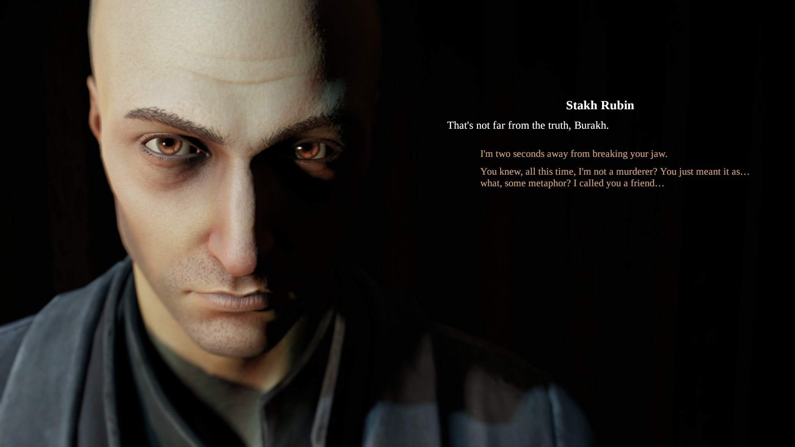
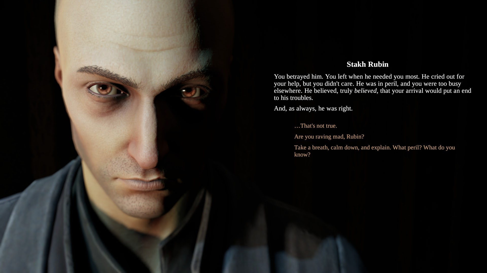

daniil dankovsky is autistic and here's why
Original source: transdankovsky on tumblr
UPDATE: There is an updated and more in-depth version of this essay now! You can find it on the author's website, right here!
- because i’m autistic and i said so
i kid, obviously. what sort of autistic person would i be if i wasn’t read to back up my silly little claim with an overly long post of evidence a total of three people will read? (hi ned hi jordan hi raven :))
i’m aware that this is cringey because adults aren’t supposed to have autism or interests or talk about either of those things, but this is my blog and you are free to block me if the cringe is too much for you.
these are some things i picked out from the DSMV’s diagnostic criteria, found on the CDC website:
- deficits in social-emotional reciprocity
- reduced sharing of interests, emotions, or affect
- abnormal social approach
- abnormalities in eye contact and body language
- deficits in […] understand[ing] relationships
- difficulty adjusting behavior to suit various social contexts
- repetitive motor movements or speech
- rigid thinking patterns
- highly restricted, fixated interests that are abnormal in intensity or focus
- hyper- or hyporeactivity to sensory input
there’s also some misc. stuff not in the diagnostic criteria (though it may be in the adir or gars-3) i thought was worth noting.
important note from the diagnostic criteria: “symptoms cause clinically significant impairment in social, occupational, or other important areas of current functioning”. i’d say that in his case, they do.
spoilers for pathologic classic, pathologic 2, and the marble nest
deficits in social-emotional reciprocity
in bachelor route of classic, daniil
- seems completely oblivious to eva making advances toward him, to the point where she complains to him that he’s ignoring her in favor of asking questions about simon.
- seems surprised when people mention maria being in love with him, despite outright asking her a couple of times if she’s flirting with him.
- not to mention the fact that he asks her that at all.
his inability or resistence to making connections with others is typically considered one of his character flaws. although it is not outright stated in the dsmv criteria, one trait of autism and other neurodivergencies is “having extremely high or extremely low empathy” - and daniil, despite being a doctor, lacks empathy. which is not to say he doesn’t care at all. i think that he does, but is terrible at showing it.
for example, this scene from marble nest:
Sticky: You must feel terrible… right? That’s fine. I forgive you. You just got confused… Adults always do.
Daniil: Oh yes, adults are always occupied with the most asinine nonsense. Like feeling anxious that a bunch of urchins keep roaming the streets, putting themselves in mortal danger!
daniil clearly cares about sticky’s wellbeing (and the wellbeing of the kids looking after him, though he’s not cognizant that he’s in a coma), but his way of showing it is… kind of by being a jerk. all of which bleeds into the next item on the list
reduced sharing of interests, emotions, or affect
he has no problem sharing his interests, but in both pathologic classic & pathologic 2, daniil speaks with a flat affect - which is to say that he lacks intonation. the words we read him saying may be dramatic or come across as passionate, but the actual voice reading his lines is very monotone, which may contribute to being read as lacking emotion.
and in pathologic 2, he has a voiceline lamenting not telling “her” (eva?) how he felt
in marble nest, he’s teased by the tragedians for being “heartless”:
Sticky: Maybe. Possibly. But it’s useless to explain to a heartless man. …Take heart, Excellency! If you ever find it, that is. And then come back to us… Even though it all sounds like a rather implausible turn of events.
abnormal social approach
daniil has a tendency to say things that are tactless, odd, or just socially inappropriate. i probably don’t need to point out too many examples, as i think it’s fairly obvious - these are the things people love to pick at when it comes to him, but i do have a few in mind. like, for example, from haruspex route in classic:
Haruspex: What of the antibodies essential for making a serum?
Bachelor: I don’t know for sure yet, I’ll send you a report in a few hours. Don’t go about cutting people’s hearts out for your panacea until then. It’s a… controversial solution, you know…
Haruspex: What?! Do you even hear yourself?
Bachelor: Sorry! I meant no offence… it was just a momentary lapse of… well, you know.
Haruspex: None taken.
until artemy points out, daniil doesn’t seem to be aware he just said something rude. even with therapy, picking up on social cues doesn’t come naturally to people with autism, so we tend to say things that come across as rude or strange to others without realizing we’ve put them off. we tend to lack a “filter” that tells us when things are or are not appropriate to say. even when we may recognize it, the rules may not make any sense to us. for example, it makes very little sense that allistics favor politeness over honesty.
i think the glaringly obvious abnormal social approach in pathologic 2 is him threatening to hold artemy at gunpoint to get in the house, which is just overkill, but my personal favorite comes on day 7, when he’s complaining about the orders aglaya has given him. artemy stops him to say he doesn’t understand what daniil wants from him, to which daniil replies:
From you? Oh, nothing. I was just sharing.
to daniil, they were just having a normal conversation. but some part of this - his tone or his words or maybe even his body language - didn’t give artemy the impression that this was supposed to be a regular conversation. (we could, in fact, attribute the same idea to artemy here; why didn’t artemy pick up that this was a normal conversation? the reason i count it towards daniil is because artemy doesn’t seem to have this problem with anybody else. for the record: i don’t think artemy is neurotypical either.)
abnormalities in eye contact and body language
it’s hard to get proof of this in video games, but i will say i think it’s very funny that in pathologic 2 daniil’s idle animations are “pacing”, “sitting like he desperately wants to start bouncing his knees but is stopping himself from doing it”, and “standing unnaturally still” - but there you go. i don’t know anything about making gifs, or i’d gif this one specific talk menu idle he does where he holds eye contact for about three seconds, looks away uncomfortably, and then looks back out of the corner of his eyes.
deficits in […] understand[ing] relationships
mostly examples from his route in classic:
- when the army arrives, he can claim to block that aglaya, whom he’s known for two days, is his best friend
- he seems baffled by the fact that everone is smitten with maria and working with her, and seems equally baffled by the idea that she’s smitten with him
- despite eva implying on day two that she is in a relationship with andrey, is completely blindsided by the revelation on day 6, asking him, “How in the world is she ‘your woman’?”
i’d also like to use his sign-off on his letter to artemy, day 2 of the haruspex route - he signs it as “Your friend (hopefully)”. i know i’m not the only autistic person who used to ask people if we were friends or not. pro tip, if you’ve never done this: don’t. it really weirds people out.
difficulties adjusting behavior to suit various social contexts
the fact that he stands out is blatantly obvious even in pathologic 2 and in the haruspex route of classic. people will comment on him being an outsider and mention that they don’t trust him. but you can watch it happen in real time in his route, because he never fully acclimates to the town. he says something about this to aglaya on day 7:
Bachelor: Was there any particularly notable backstory? I’m deadly tired of all these people. They’re inhuman. They tell the future, believe in walking zombies, and die in all manners of painfully abnormal ways.
Inquisitor: Your line of thinking is obviously fallacious - and I was implying something rather mundane. I promise you, no one can really tell the future around here: and neither are deaths inspired by third parties uncommon. Mysterious phenomenons do occur here sometimes… but hardly more often than anywhere else.
actually, there’s an example of him saying something similar to artemy on day 5 in pathologic 2:
Damn this town… I feel I’m trapped in a nightmare. The absurdity of it all… There’s no one to talk to. Everyone’s so volatile. They all seem to want to help, but… their help is worse than hostility.
some of this can be explained by the town’s strangeness, but keep in mind that the first instance happens after he’s been there and involved in the ongoing for an entire week, and the second at nearly a week in. clearly he’s struggling to adjust to the changes.
it’s also worth noting that his reason for fleeing the town in the nocturnal ending?
I have no place here anymore.
This town is no longer mine. No longer human. No longer rational. It doesn’t… accept the likes of me anymore.
repetitive motor movements or speech
it’s harder to see the motor movements in classic, but remember how i pointed out earlier that he paces? pacing is a form of stimming. murky, who is canonically autistic, can also be found pacing as one of her idle animations. having stock phrases for characters to speak when you come near them already ticks off the box on “repetitive speech”, but that by itself doesn’t really cover what they’re talking about - echolalia.
but you know what this does fit with? “‘quoting’ things(communication is HARD! sometimes we need to take shortcuts and use someone else’s words)“
i’ll get to the more obvious example in a minute - i want to point out something that happens very early in pathologic 2 first. you know how you first meet him and artemy accuses daniil of trying to guilt-trip him by asking if it’s true that isidor would still be alive if artemy had come sooner? keep in mind that he spoke to rubin first. and this is what rubin says, when you get a chance to talk to him:

Yesterday, I was told you had killed your father.
That's not far from the truth, Burakh.
You betrayed him. You left when he needed you most. He cried out for your help, but you didn’t care. He was in peril, and you were too busy elsewhere, He believed, truly believed, that your arrival would put an end to his troubles.
And, as always, he was right.
i’m not saying this was necessarily the game’s intent, but it’s entirely possible daniil is parroting back to artemy exactly what rubin said to him.
now, for what you’re probably expecting in this section: the latin. people love to refer to his use of latin as “random”, so let’s clear that up:
- it is not latin daniil has made up. with the exception of latin that is mispelled in the game’s texts, all of them are proverbs or otherwise common sayings. you can find most of them on the wikipedia list of latin phrases, or through a 3-second google search.
- he’s a doctor. him having taken latin isn’t anymore strange than a lawyer taking latin. in fact, if you pay attention, artemy also took latin; this is implied when artemy tells him he’s always sucked at it.
- his uses of latin actually aren’t random at all. what he says fits the situation, and sometimes is used in place of him having to come up with something to say on his own.
prime example:
Forget it, Burakh. I have a splitting headache. If you have no urgent business, then we’ll talk later. Later, later… Qui non proficit, deficit.
qui non proficit, deficit - he who does not advance, loses ground. in other words, “i’m sorry, but i really do need to keep working.” one of his voice lines.
as for why he doesn’t translate the latin: it probably wouldn’t even occur to him to. these are not obscure sayings. the utopians all have a certain degree of education - what would he need to translate them for?
this bleeds into something that isn’t really mentioned, but that i’ve found i have a lot of trouble with in everyday life. autistic people have a tendency to either overexplain (and then have everyone get mad at you because they feel you’re being condescending) or underexplain (and have everyone get mad at you because you haven’t explained anything). the latin would be a case where it feels like a justified underexplanation. you’ll notice that when it comes to anything scientific, he tends to do the reverse, and overexplain. this also happens in classic, whether artemy has asked him to clarify or not.
rigid thinking patterns
the thing i had marked for this was simply his strict adherence to western medical practices and refusal to acknowledge the supernatural, even when it seems obvious - he has a conversation in his route in classic with yulia about this, and that is in fact how he manages to get to her: by asking saburov if there are any other logical skeptics in town. it should be noted they seem to be breaking with this in pathologic 2, where one of his voicelines is “I’m no positivist. There are things in this world beyond our mundane perception.” i have no idea where they’re planning on going with that.
there’s also a quote floating somewhere around twitter about him having been raised by a military man, and militaries tend to enforce very rigid routines. you could say the same thing of block - who (in classic at least) i also have my suspicions about.
highly restricted, fixated interests that are abnormal in intensity or focus
special interests. the one that should obviously come to mind is thanatology, though i would argue latin if not classics in general is a special interest of his as well - in addition to his usage of latin, he also references pericles in the marble nest and was probably refering to the roman occupation of haruspicy in addition to augurs in the same text. he also makes references to shakespeare more than once in both marble nest and pathologic 2.
hyper- or hyperoreactivity to sensory input
i don’t have much written down for this one but there seem to be several places in classic especially where he asks npcs to stop shouting at him. we don’t really have the privilege to know their volume or how they’re interacting with him, but i think it’s also worth noting that he’s the only one of the healers who wears gloves. in pathologic 2 he’s the only named character i can think of who wears them at all. his thing in the lucid dream about the brain being “a border”? gloves are his border, as is his jacket, which may be worn to cut down on sensory issues.
he will also sometimes seem to “overreact” to the situation at hand - such as in classic, when some dogheads mispeak and say that daniil is going to “sterilize” them, and instead of understanding that they must have mispoken, freaks out over the idea that they think they’re going to be… well… sterilized. or in haruspex route, when his reaction to the inquisitor arriving is to threaten suicide.
miscellaneous
he never goes anywhere without that carpet bag. we don’t see it in pathologic 2, but we do hear about it and he doesn’t let it go for a second in classic - not even in the cutscenes where he’s using the microscope. his bag could be a comfort item.
“getting very attached to things like inanimate objects” could work for the bag - but you know what it actually fits the bill much more obviously? the polyhedron. in the haruspex route he recognizes that it’s a lost cause, but he’s still too attached to it to let it go.
in classic at least, daniil is absolutely terrible at lying. most autistic people either are not good at lying, or feel uncomfortable or anxious with having to lie. when he’s asked by yulia and the kids in the polyhedron to lie to block (for different reasons) he’s clearly uncomfortable with the idea that it’ll work. and when it actually comes time to come up with a way to lie to block about why he needs five rifles, your options are to either buckle and tell him the truth, or simply say that you need them for “self-defense”. block believes that you’re not lying to him, but daniil can’t come up with any embeleshments to explain why he needs what he’s asking for.
Commander: Are you hiding something from me?
Bachelor: No.
he comes across as naive to other characters. in classic, capella has a voiceline saying, “The Bachelor is not smart. Intelligent, yes… but not smart.” in Pathologic 2, Daniil complains that Aglaya takes him for “a useless dreamer”. he’s also easily used by the Kains to fulfill their endgame in classic.
my final, and absolute favorite: he takes things way too literally. autistic people (and adhd people, from my understanding) have a hard time differentiating jokes and sarcasm. so my favorite moment in marble nest is a case of him taking that earlier advice - to “take heart” literally, by bringing the tragedians a literal human heart:
Tragedian: Oh… Excellency. What a sordid sight! Sorry for underestimating you. You definitely do have… how shall I put it… a creative touch. But this is pure madness. You can’t take things so literally!
Daniil: You wanted me to come back to you with an open heart. Well, here I am. …It looked too fitting to be a coincidence.
your mind map, after this, updates to say “I misunderstood the tragedians.”
conclusion
people don’t stop being autistic with age and i think he’s a good example of what it’s like to be in your late 20s and be autistic. i’m sure i missed things as i haven’t finished haruspex route of classic yet and there may just be some other things he does or says that i missed! if anyone has anything to add they think fits i would love to know, thank you for your time :)